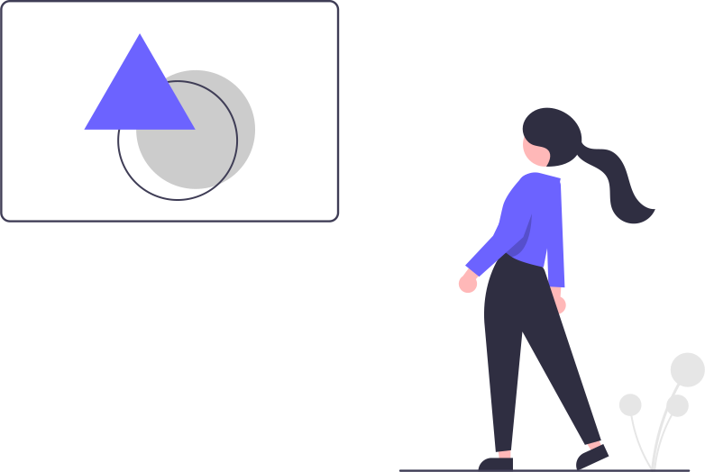

Bionic Installation
Minimum system requirements
● python 3
● pip
Remended system requirements
● python 3
● pip
● vs code
● live server
Get the Bionic framework
$ pip install bionic.web
Crafting new projct
$ Bionic.py create hello_world
